制药行业
一、行业现状
医药产品按其特点可分抗生素、有机药物、无机药物和中草药四大类。由于药品生产工艺的不同，其产生的废水也完全不同，属于成分复杂、多变的难处理废水。
我公司采用“HBJ系列高效微生物系统” + “深度处理系统”工艺成功运用于国内各大知名制药厂的废水处理当中，取得了很好的效果。
二、工艺流程
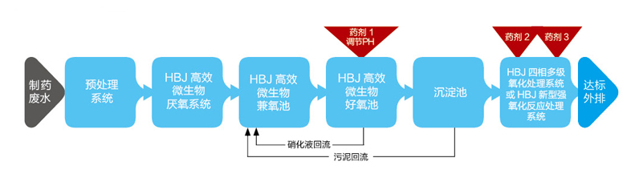
三、处理效果表
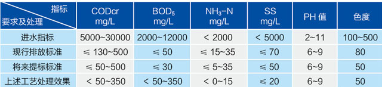
四、工艺运行特点及优势
|
1、采用“HBJ系列高效微生物系统” + “深度处理系统”工艺，对制药废水污染物去除效果好，可做到出水指标CODcr打到100mg/L，氨氮打到5mgL.
2、HBJ系列高效微生物适应性强，耐负荷高，尤其是对于HBJ系列高效微生物适应性强，耐负荷
3、HBJ系列高效微生物适应性强，耐负荷高，尤其是对于HBJ系列高效微生物适应性强，耐负荷HBJ系列高效微生物适应性强，耐负荷HBJ系列高效微生物适应性强，耐负荷
|
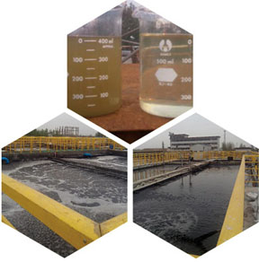 |
一、行业现状
焦化废水是炼焦、煤气在高温干馏、净化及副产品回收过程中，产生含有挥发酚、多环芳烃及氧、硫、氮等杂环化合物的工业废水、其成分复杂，含有大量的酚、氰、苯、氨氮等有毒有害物质，具有水质水量变化大、成分复杂，有机物特别是难降解有机物含量高、氨氮浓度高等特点。其主要来源有三个：一是剩余氨水，其水量占焦化废水总量的一半以上，是焦化废水的主要来源；二是在煤气净化过程中产生出来的废水；三是在焦油、粗苯等精致过程中及其它场合产生的废水。
焦化行业主要污染因子确定原则：加强预处理，尽量减少有毒有害物质及油类含量，建立有利于实现硝化反硝化的生物系统，做好后续深度处理环节，保证废水达标排放。
二、工艺流程
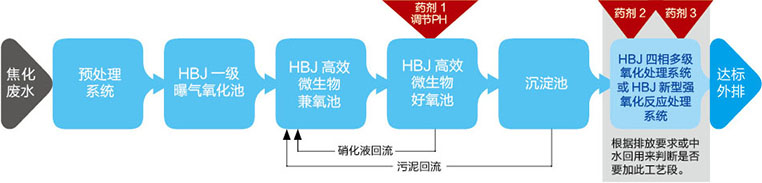
三、处理效果表
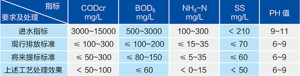
四、工艺运行特点及优势
1、采用该工艺处理焦化废水，污染物去除彻底，出水CODcr可达100mg/L以下，氨氮可达5mg/L以下
2、“HBJ系列搞笑微生物系统”对焦化废水中硫化物、酚类、氯化物等有毒有害物质耐受能力比普通菌种高出数倍，系统运行稳定、可靠；
3、“HBJ系列高效微生物系统”+“深度处理系统”工艺相对其他焦化废水处理工艺，具有工艺流程简单、运行成本低、剩余污泥量少等优点。
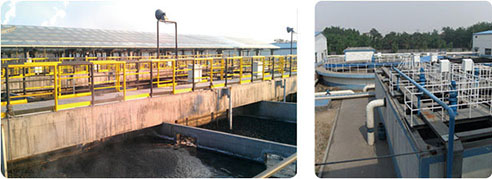
一、行业现状
制革废水主要分为脱脂、浸灰脱毛、软化、鞣制、染色加工、等工段生产废水、含有油脂、胶原蛋白、动植物纤维、硫化物、铬、表面活性剂、染料等多种污染物质和有毒物质，水质水量波动性较大，悬浮物高。
二、工艺流程
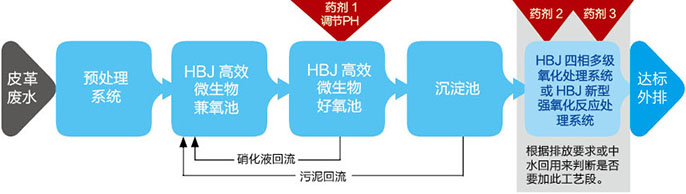
三、处理效果表
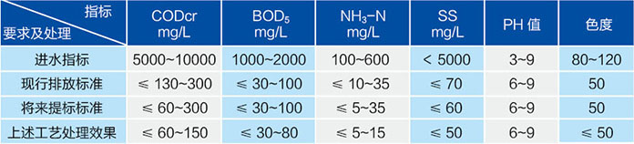
四、工艺运行特点及优势
|
1、采用预处理 + “HBJ系列高效微生物系统” + “深度处理系统” 工艺处理皮革废水，出水CODcr可达100mg/L以下，氨氮可达5mg/L以下
2、“HBJ系列高效微生物系统”可对皮革废水中硫化物、表面活性剂等有毒有害物质耐受能力比普通菌种高出数倍，系统运行稳定、可靠；
3、“HBj系列高效微生物系统” + “深度处理系统” 工艺相对其他皮革废水处理工艺处理，具有工艺流程简单、运行成本低、剩余污泥量少等有点。
|
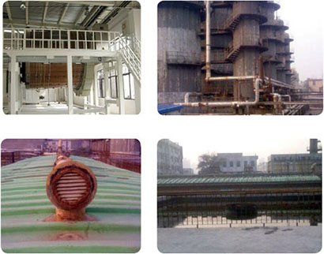
|
一、行业现状
印染废水是加工棉、麻、化学纤维及其混纺产品为主的印染厂排出的废水。印染行业废水的排放是我国造成水体污染的终点行业之一，与其他行业相比，印染废水具有废水排量大，颜色深，难降解有机物含量高，水质不稳定等特点。目前，对于印染废水的处理主要采用物理化学法和生物法，然而单独采用某一种方法处理印染废水很难达到处理要求，因此需要对不同工艺进行优化组合。
二、工艺流程
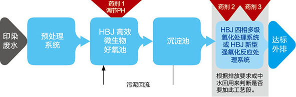
三、处理效果表
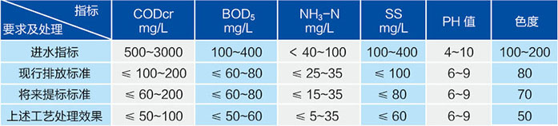
四、工艺运行特点及优势
1、采用“HBJ系列高效微生物系统” + “深度处理系统”工艺处理印染废水，CODcr去除彻底，出水CODcr可达100mg/L以下；
2、“HBJ系列高效微生物系统” + “深度处理系统”工艺可有效分解印染废水中化学染料、人造丝剪碱解物(主要是邻苯二甲酸类物质)、新型助剂等有机物；
3、“HBJ系列高效微生物系统” + “深度处理系统”工艺相对其他印染废水处理工艺处理，具有效果好、运行成本低、运行稳定可靠、脱色效果好等优点。
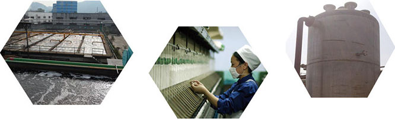
一、行业现状
电镀行业是国民经济中不可缺少的产业，涉及国防、工业、生活领域。电镀生产的废水含有重金属、氰化物等毒性大的物质，对环境危害大，必须严格处理后排放。
电镀废水的来源一般为：(1)镀件清洗水；(2)废电镀液；(3)其他废水，包括冲刷车间地面，刷洗极板洗水，以及由于镀槽渗漏或操作管理不当造成的“跑、冒、滴、漏”的各种槽液和排水；(4)设备冷却水。电镀废水的谁知、水量与电镀生产的工艺条件、生产负荷、操作管理与用水方式等因素有关。电镀废水的水质复杂，成分不易控制，其中含有铬、镉、镍、铜、锌、金、银等重金属离子和氰化物等，有些属于致癌、致畸、致突变的剧毒物质。
二、电镀废水处理工艺
依据对电镀行业的生产工艺及废水排放情况的了解，我公司指定了一套完整的、科学的、合理的电镀废水工艺处理体系，主要通过清污分流，单独预处理，再综合处理，统一排放。
废水处理的主要工艺流程图为：
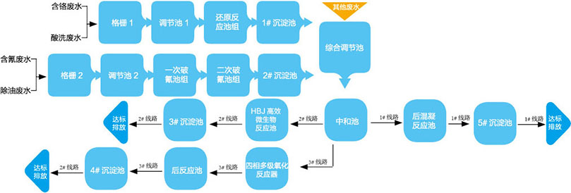
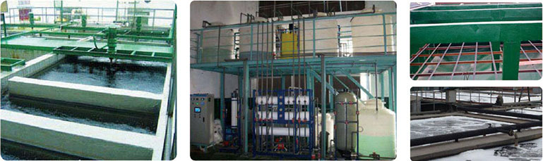
概述
随着中国工业经济的高速发展，国内水环境形势日益严峻，在“调结构、保增长”的发展模式下，工业企业的废水治理越来越受到重视，国家对环保要求不断提高，未来对污水处理企业的技术要求也将越来越严格，行业技术水平将向更高标准的污水深度化处理方向发展。
一、HBJ技术工艺优势
HBJ技术工艺可根据不同行业废水性质，采用适应性强的HBJ高效微生物系统，结合深度处理系统，以保证处理效果。在保证效果的前提下，再以相对较低的处理成本成为了行业竞争的主要优势。
HBJ主要技术工艺经济分析：
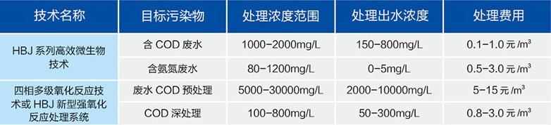